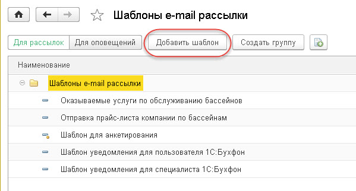
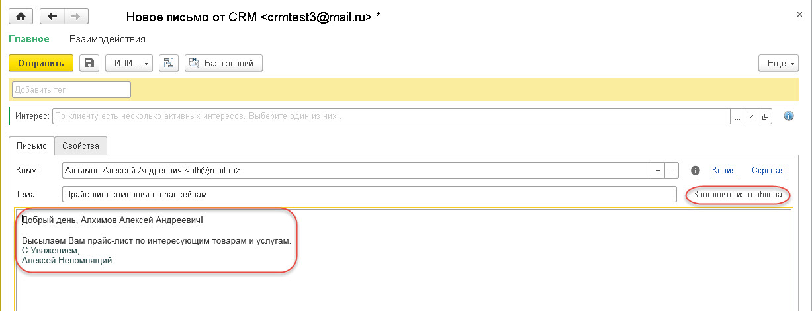
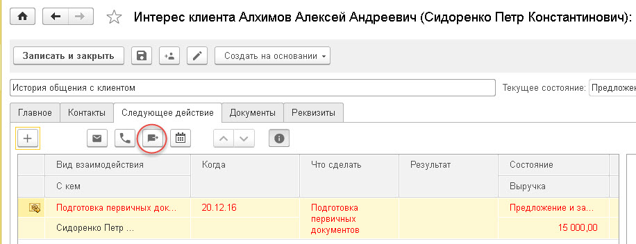
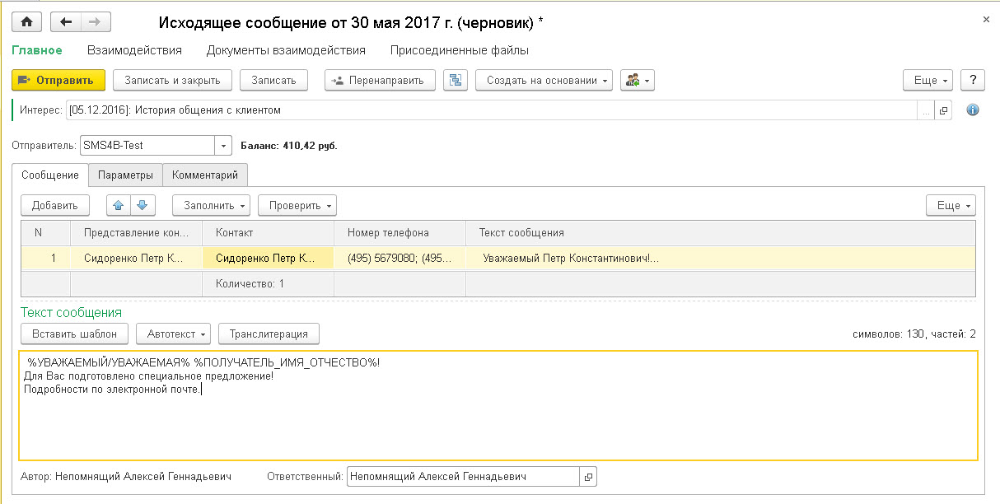

Часто возникает необходимость использование автоекста (или далее тегов) при работе со многими объектами в решении 1С: CRM. Отдельно писано использование тнгов при подготовке печатных форм Коммерческого предложения и Договоров. В тоже время теги могут быть очень удобны и в других сценариях. Например, в тексте исходящих электронных писем применение тегов, позволяет персонифицировать каждое письмо: в текст письма автоматически подставляются персональные данные получателя письма. Таким образом, рассылка становится персональной, адресной. Рассмотрим примеры сценариев, которые реализованы в решении 1С: CRM.
Использование тегов в тексте электронных писем
Приведем пример создания «Шаблона e-mail рассылки», который в дальнейшем можно использовать не только в рассылке электронных писем, но и в исходящем письме. Теги создаются в справочнике «Шаблоны автотекста», но в группе «Автотекст электронного письма». Перейдем в раздел «Настройки» - «НСИ» - «Шаблоны e-mail рассылки». В открывшемся списке нажимаем кнопку «Добавить шаблон».

Заполняем поля:

Примечание: Использование типа шаблона "Загрузить из HTML файла" позволяет вместо встроенного редактора в решении загрузить уже подготовленный файл в HTML формате, который будет вставляться в тело письма "как есть" без возможности его редактирования. Это удобно при создании красивых рассылок средствами внешних программ,позволяющих использовать все возможности форматирования языка HTML. В текст такого файла также могут быть вставлены теги, которые будут автоматичесви заполнены из решения 1С:CRM.
Сохраняем и закрываем форму. Теперь создаем письмо, например из Почты. В открывшейся форме исходящего письма добавляем Клиента в поле «Кому» и далее нажимаем кнопку «Заполнить из шаблона». Выбираем необходимый шаблон и нажимаем кнопку «Выбрать». И видим, что все заполнилось

Использование тегов в тексте SMS
В решении имеется возможность выполнять отправку индивидуальных SMS сообщений с помощью подключения соотвествуюзего сервиса (например, сервис SMS4b.ru). Настройки подключения сервиса SMS рассылок настраивается в разделе "Настройки - Настройки системы - Настройка отправки SMS". После подключеняи сервиса работа с тегами во многом схожа с использованием тегов при отправке электронных писем. Например, отправка SMS сообщения доступно из формы документа Интерес, закладка "Следующее действие".

В открывшемся окне заполняем большинство данных будет заполненов, в том числе получатель. Необходиом заполнить только поле "Текст сообщения" используя группу "Автотекст". В результате получается текст сообщения, представленный ниже. Весь текст сообщения виден при наведении мыши на данной поле.

После команды "Записать" напротив получателя формируется текст, который будет отправлен. По нажатию команды "Отправить" SMS сообщение отправляется контакту Середа Татьяна Петровна.